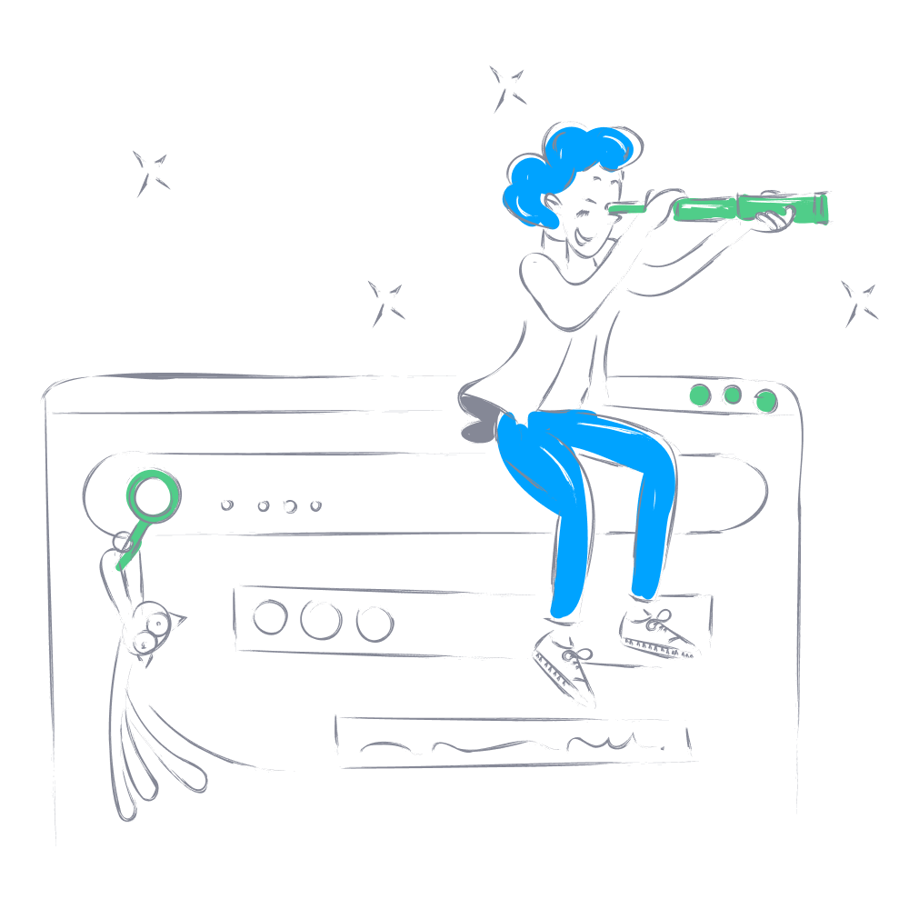

<!-- 
<div class="container-fluid">
  <div class="row d-flex justify-content-center">
      <div class="col-12 col-md-11 pt-5">
        <p-tabView [(activeIndex)]="activeTabIndex" dir="rtl">
          <p-tabPanel [header]="'تیکت ها'">
            <ng-custom-table
            [rowData]="ticket"
            [config]="config"
            captionText="تیکت"
            [enableAdd]="false"
            [enableFilter]="true"
          ></ng-custom-table>
          </p-tabPanel>
          <p-tabPanel *ngFor="let item of ticketConversations" [header]="item.user.username" [closable]="true">
            <ng-conversation [operator]="item.operator" [user]="item.user" [conversations]="item.ticketConversations"></ng-conversation>
          </p-tabPanel>
        </p-tabView>
      </div>
  </div>
</div> -->


<div class="container-fluid">
  <div class="row d-flex ">
    <div class="col-12 col-md-5 pt-5 ticket-conversations">
      <ng-loading *ngIf="gettingConversation" [static]="true"></ng-loading>
      <div class="empity-conversation text-center" *ngIf="ticketConversations.length==0">
        
      </div>
      <ng-container *ngIf="ticketConversations.length!=0">
        <p-tabView (onClose)="closeConvesation($event)" [(activeIndex)]="activeTabIndex" dir="rtl">
          <p-tabPanel *ngFor="let item of ticketConversations" [header]="item.user.username" [closable]="true">
            <ng-conversation [ticketConversation]="item" (answeredTicket)="onAnsweredTicket($event)">
            </ng-conversation>
          </p-tabPanel>
        </p-tabView>
      </ng-container>

    </div>
    <div class="col-12 col-md-7 pt-5">
      <ng-container *ngFor="let item of ticket">

        <div dir="rtl" class="ticket-box d-flex flex-column p-3 mb-5">
          <div class="d-flex justify-content-between ">

            <div class="d-flex flex-column">
              <div class="title">{{item.user.first_name}} {{item.user.last_name}}
                <span *ngIf="item.user_satisfaction==true"><i class="far fa-smile-beam"></i></span>
                <span *ngIf="item.user_satisfaction==false"><i class="far fa-frown"></i></span>
              </div>
              <div class="date">{{+(item.last_conversation_time + '000') | jalalitime}}</div>
            </div>
            <ng-container [ngSwitch]="item.status">

              <div *ngSwitchCase="'Closed'" class="status badge success-badge">
                بسته شده
              </div>
              <div *ngSwitchCase="'UserWaiting'" class="status badge primery-badge">
                در انتظار کاربر
              </div>
              <div *ngSwitchCase="'AdminWaiting'" class="status badge warning-badge">
                در انتظار ادمین
              </div>
            </ng-container>
          </div>
          <div class="content my-3">
            {{item.last_conversation_text}}
          </div>
          <div>
            <div *ngIf="item?.category" class="category badge">
              {{item?.category?.title}}
            </div>
          </div>
          <div class="d-flex justify-content-between border-top mt-3 pt-3">
            <div class="operator">
              <small>
                نام اپراتور :
              </small>
              {{item.operator.name}}
            </div>
            <div class="actions">
              <i class="fad fa-comments p-2" (click)="openConversation(item)"></i>
              <i class="fas fa-times p-2" (click)="closeTicket()"></i>
            </div>
          </div>
        </div>
      </ng-container>
    </div>
  </div>
</div>